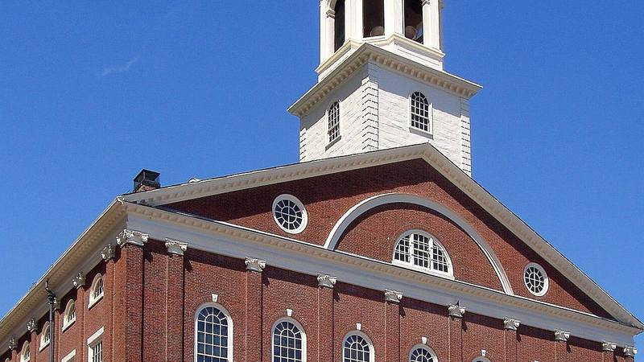

Faneuil Hall
Free. The National Park Service visitor center on the first floor is open 10am to 5pm on Sundays, with free Freedom Trail maps and rangers to ask.
Upstairs, the Great Hall has hosted public meetings and debates for over 275 years. Open 10am to 4:30pm, unless a city event closes it.